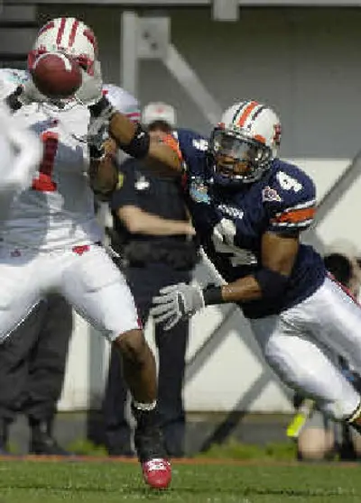
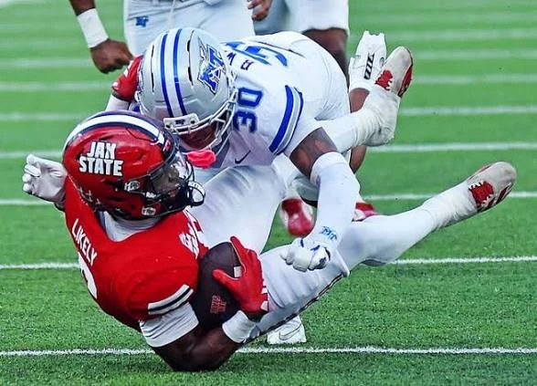

BUILD THE
ATHLETE.
CHANGE THE
OUTCOME.
Elite sports management meets real athlete development. From brand opportunities and college exposure to football and track performance, we prepare athletes to make their next move count.



TO
IMPACT
FOUR PATHWAYS.
ONE STANDARD.
Support on the field, off the field, and in the moments that shape what comes next.
NIL &
ENDORSEMENTS
Brand positioning, opportunity evaluation, and deal guidance.
02COLLEGE
EXPOSURE
A focused two-week recruiting and college introduction experience.
03ELITE 7V7
FOOTBALL
Compete, sharpen your game, and pursue high-level 7v7 opportunities.
04SPEED &
TRACK TRAINING
Develop acceleration, mechanics, speed, and competitive confidence.

YOUR VALUE.
THE GAME IS BIGGER
THAN GAME DAY.
Great play can open doors. Knowing how to navigate those doors matters just as much. We help athletes understand their value, evaluate opportunities, and prepare for conversations with potential brand partners.
- Build a clear athlete identity and marketable story
- Prepare for sponsor outreach and endorsement discussions
- Understand deliverables, expectations, and deal terms
- Make informed decisions with athlete-first guidance
Examples of brands athletes may aspire to work with
Brand names are examples, not claims of a partnership, endorsement, or guaranteed deal.
Learn about NIL guidance ↗TWO WEEKS.
COUNTLESS NEXT STEPS.
Our proposed 14-day exposure experience is designed to introduce athletes to 30+ college programs and help families better understand recruiting at the Division I, Division II, and other collegiate levels.
Schools identified in past participant offer stories include Georgia, Kentucky, Mississippi State, and Kansas. These are program-reported examples, not confirmed partner institutions or promises of offers.
See the tour experience ↗BE READY.
PUT IN THE WORK.
EARN THE MOMENT.
UNDERDOG
MENTALITY 7V7
Explore a competitive 7v7 opportunity with Underdog Mentality, subject to evaluation and roster availability.
Learn more ↗SPEED CHANGES
THE GAME.
Explosive speed training informed by coaching experience at both the high school and middle school levels.
Learn more ↗GUIDANCE FROM PEOPLE WHO KNOW THE GAME. DEVELOPMENT THAT GOES BEYOND THE GAME.
Experience • Preparation • Athlete advocacy
THE ROAD TO IMPACT.
DISCOVER
Get to know the athlete, their goals, experience, family priorities, and recruiting position.
DEVELOP
Sharpen performance habits, presentation, visibility, and readiness for the next level.
EXPOSE
Identify relevant competitive, college, and brand opportunities worth pursuing.
ADVOCATE
Help athletes and families understand options, terms, expectations, and decisions.
KNOW BEFORE
YOU GO.
Does joining guarantee a college scholarship or offer?
No. Irons2Impact is designed to improve preparation, information, and access to potential opportunities. Recruiting, admissions, scholarship decisions, and team offers are made by colleges and cannot be guaranteed.
Do you guarantee Nike, adidas, or Under Armour deals?
No. Those brands are examples of companies that athletes might aspire to work with. We offer brand positioning and opportunity guidance, not guaranteed sponsorships or a claim of brand affiliation.
Is the 30+ college tour the same as 30 campus visits?
No. The goal is exposure to 30 or more college programs over a two-week experience, which may include introductions, conversations, events, and visits where confirmed. A detailed itinerary and participation terms should be provided before enrollment.
Can an athlete participate in only one program?
Yes, you can inquire about NIL guidance, the tour, 7v7, speed training, or a combination. Final enrollment options and availability are confirmed directly by the team.
Can younger athletes participate?
Families are welcome to inquire. Eligibility, training suitability, NIL rules, and guardian approval depend on the athlete's age and the particular activity.